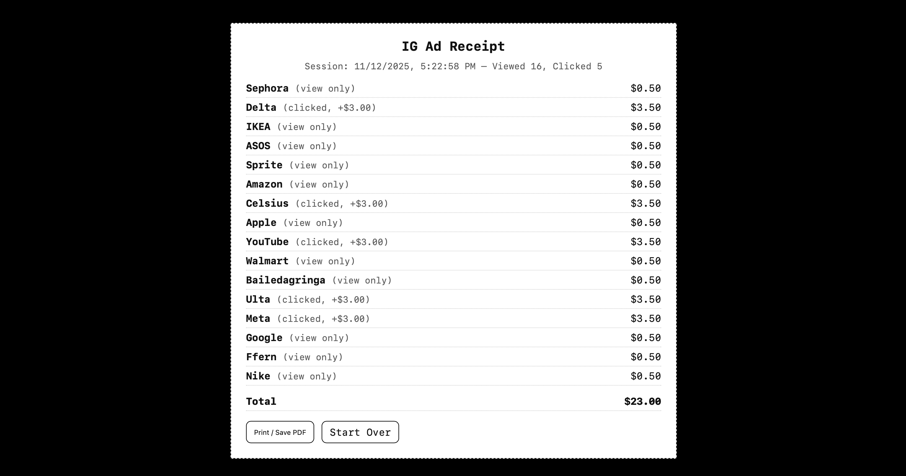

Landing page overloaded with personalized Instagram ads.

Transition screen using printer animation to mimic data processing.

Scrolling receipt showing the cumulative cost of ad engagement.
An interactive web experience that exposes the hidden economy behind user interactions with Instagram ads where every pause, scroll, and click quietly becomes a transaction of value.
View Live ProjectA simulation showing how user attention translates into advertising value.
The Hidden Cost of Engagement explores how social media platforms transform attention into profit. The experience mimics how even the smallest digital gestures—hovering, pausing, or clicking—can generate measurable economic impact. By visualizing this invisible flow of money, the project invites users to question how their everyday online behaviors are monetized.
Using ad data extracted from my own Instagram activity, I recreated the experience of scrolling through ads that track and value each micro-interaction. The project simulates how viewing an ad adds $0.50 to a virtual counter, while clicking it contributes $3.00. These amounts are symbolic, designed to make visible the hidden infrastructures of engagement that drive the attention economy.
The interface was developed using HTML, CSS, and JavaScript, with responsive design and animated receipts representing financial transactions. I experimented with scroll-based triggers to simulate real-time tracking and user feedback loops. The aesthetic borrows from Instagram’s minimalist UI but shifts its tone into a critical commentary on digital consumerism.
This project reminded me that design is not neutral—interfaces shape behavior and value systems. By turning the invisible data exchange into a visual, interactive metaphor, I wanted to bridge awareness and playfulness. It was a reminder that every tap, swipe, or pause online participates in a vast network of value creation.
Landing page overloaded with personalized Instagram ads.
Transition screen using printer animation to mimic data processing.
Scrolling receipt showing the cumulative cost of ad engagement.